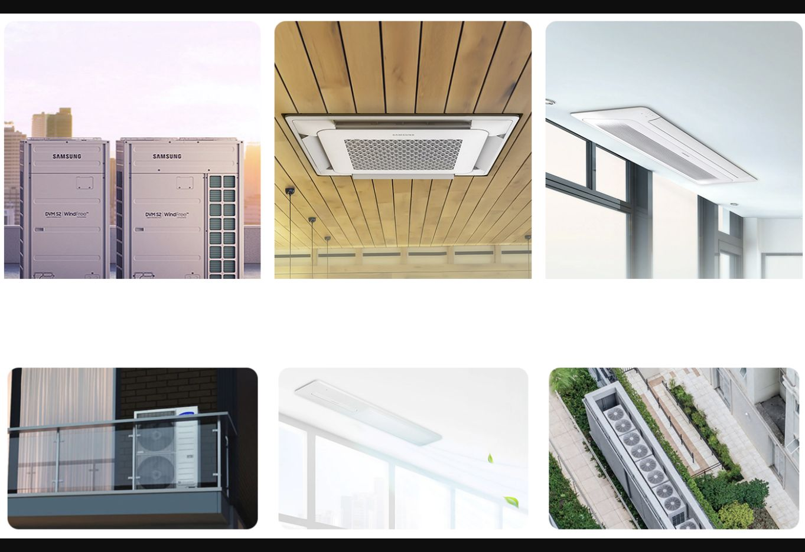

안녕하세요?
저희 조은공조시스템은 광주, 전라도권 외 전지역의 가정용 냉난방기(벽걸이, 스탠드, 2in1, 천장형), 업소용 냉난방기, 중대형 냉난방기, 사계절 천장형 냉난방기 판매 및 설치, 이전설치 전문 업체입니다.
찾아주신 모든 분들께 꼼꼼하고 정확한 서비스로 고객만족 및 신뢰를 최우선으로 하고 있습니다.
최고의 기술력으로 정확한 시공 및 완벽한 마무리!
최고의 서비스를 제공해드리면서 하자 없는 시공을 추구합니다.
제품 및 견적 문의
010-2855-1154
친절한 상담 약속드립니다.
소개글